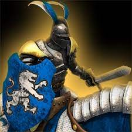

Unidades únicas:
cada civilización tiene una o dos unidades únicas, generalmente muy poderosa y que en general se entrena en un castillo, y dependiendo de la civilización, puede ser de cualquiera de los tipos de unidades militares antes citadas. Los vikingos tienen dos unidades únicas: los barcos dragón y los berserker.
Monjes:
no pueden luchar, pero forman parte del ejército porque son capaces de sanar unidades propias o aliadas que han sufrido daños. Los monjes cumplen además otras dos funciones: pueden llegar a convertir edificios y unidades enemigas para que cambien de bando, y también pueden recoger y guarecer reliquias, las reliquias guarecidas en los monasterios proporcionan cantidades pequeñas pero constantes de oro y en ciertos modos de juego las reliquias te pueden dar la victoria si guareces todas y la cuenta atrás llega a cero.
Héroes:
son unidades especialmente poderosas que emulan generalmente a personajes históricos de gran relevancia, bien concretos o bien genéricos. En torno a muchos de ellos se desarrollan las diferentes campañas del juego. Su muerte a menudo conlleva la pérdida de una partida. Todos los héroes aparecen en el modo editor, proviniendo algunos de las campañas y siendo otros exclusivos de dicho modo. Estos personajes son: Alexander Nevski, Arqueros de los ojos, Arzobispo, Belisario, Carlomagno, Carlos Martel, Condestable Richemont, Duque de Alençon, El Cid, El Príncipe Negro, Emperador en un tonel, Erik el Rojo, Etelfredo, Fraile Tuck, Genghis Khan, Guy Josseline, Harald Hardrade, Honda de Dios, Hrolf el Capataz, Jean Bureau, Jean de Lorena, Juana de Arco, Juana la Doncella, Kitabatake, Kushluk, La Hire, Lobo de caza, Lord de Graville, Maestre del Temple, Mal vecino, Minamoto, Mordred, Ornlu el Lobo, Paladín franco, Reinaldo de Chatillon, Rey Arturo, Ricardo Corazón de León, Robin Hood, Roldán, Saboteador, Señor Bertrand, Señor de Metz, Sha, Sheriff de Nottingham, Sigfrido, Sir Gawain, Sir John Fastolf, Sir Lanzarote, Subotai, Tamerlán, Teodorico el Godo, Vlad Drá.
Tecnologias
las tecnologias son una parte fundamental del gameplay, del AoE 2 las cuales pueden determinar el rol de una partida, dando una vetaja sumamente superior contra el oponente.
Son una serie de mejoras, que afectan en la recoleccion de recursos,en la efectivida de la economia y en el daño, resistencia o vida de las unidades militares, las cuales cuestan una cuota determinada de recursos. Estas se "obtienen" en edificios como el centro urbano, la herreria, el castillo, etc.
Cada una de las civilizaciones tiene su rama de tecnologias, teniendo una serie de ventajas u desventajas dependiendo se la civilizacion elegiga. Esto lleva que unas civilizaciones sean mas efectivas contra otras.